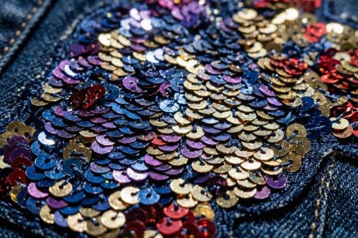

Sequin Patches: Sparkle for Entertainment Industry
Discover everything about sequin patches: manufacturing process, design tips, entertainment industry applications, and why they're perfect for creating eye-catching, shimmering designs that catch the light and captivate audiences.

What Are Sequin Patches?
Sequin patches represent one of the most dazzling and eye-catching patch styles available, combining traditional patch construction with reflective sequins that create a shimmering, light-catching effect. Sequins are small, disc-shaped ornaments used for decoration, and the word "sequin" derives from the Venetian word "zecchino," a gold coin minted in Venice during the Renaissance, reflecting the luxurious and attention-grabbing nature of these decorative elements.
While sequins themselves have been used in fashion for centuries, sequin patches bring this dazzling effect to a versatile, attachable format. These patches feature small, reflective discs - typically made from plastic, metal, or polyester film - stitched onto a fabric backing. As light hits the sequins from different angles, they create a dynamic, sparkling effect that instantly draws attention and adds glamour to any garment or accessory.

The Rich History of Sequins in Fashion
The story of sequins is a fascinating journey through centuries of fashion and technology. The earliest known sequins date back to ancient Egypt, where archaeologists have found gold sequins adorning garments in Egyptian tombs. These early sequins were typically made from precious metals, making them symbols of wealth and status reserved for royalty and the elite.
During the Renaissance in Venice, sequins became more accessible as goldsmiths began creating smaller, more affordable gold discs known as "zecchini." These decorative elements adorned the elaborate costumes of Venetian nobility during the famous Carnival celebrations. The Industrial Revolution in the 19th century brought mass production techniques, making sequins more affordable and accessible to broader audiences. However, it was the 20th century that truly saw sequins enter mainstream fashion, particularly through the influence of Hollywood and the entertainment industry.
The Golden Age of Hollywood Glamor
The 1920s through the 1950s marked the golden age of sequins in Hollywood costume design. Costume designers like Edith Head and Adrian used sequins extensively to create the glamorous gowns worn by stars like Marilyn Monroe, Audrey Hepburn, and Elizabeth Taylor. Sequins caught the bright lights of movie sets perfectly, creating that magical "star quality" that defined the era. This Hollywood influence made sequins synonymous with glamour, celebration, and special occasions - associations that remain strong today.
How Sequin Patches Are Made
Creating quality sequin patches requires specialized materials, precision equipment, and skilled craftsmanship. The process combines traditional embroidery techniques with specialized sequin application technology.
Materials Used in Sequin Patches
Quality sequin patches start with carefully selected materials:
- Sequins: Available in various materials including plastic (PVC/PET), metal (aluminum, brass), and holographic film. Plastic sequins are most common for their durability and affordability.
- Sequin Sizes: Typically ranging from 3mm to 8mm, with 5mm being the most versatile and popular size for patches.
- Sequin Shapes: Round is standard, but square, hexagonal, and custom shapes are available for special designs.
- Backing Fabric: Typically a sturdy twill or felt that provides structure and stability.
- Embroidery Thread: High-quality polyester or rayon thread for securing sequins and adding details.
The Manufacturing Process
Creating sequin patches involves several specialized steps:
1. Design and Digitization
The process begins with designing the patch and digitizing it for sequin embroidery. Unlike regular embroidery, sequin designs require special programming that accounts for sequin placement, spacing, and the unique requirements of sequin attachment. Our design team carefully plans which areas will feature sequins and which will use standard embroidery for optimal visual impact.
2. Base Preparation
A sturdy fabric base is prepared in a hoop or frame, and any felt backing is applied to provide additional structure. This foundation ensures the patch maintains its shape and stability through years of wear and washing.
3. Sequin Application
Specialized sequin embroidery machines attach each individual sequin with precision stitches. The machines cut sequins from a continuous strip and secure them with a locking stitch that prevents them from falling off. This step requires careful calibration to ensure consistent spacing, alignment, and attachment security across the entire design.
4. Embroidery Detailing
Once the sequin elements are in place, embroidery machines add outlines, lettering, borders, and fine details using standard embroidery thread. This contrast between shimmering sequins and smooth embroidery creates visual interest and definition, making the design truly pop.
5. Cutting and Finishing
The patches are precisely cut to shape, either with a hot knife for synthetic materials or laser cutting for ultimate precision. Any loose threads are carefully removed, and the patches undergo thorough quality inspection to ensure every sequin is securely attached and the overall quality meets our standards.
Types of Sequin Effects
Sequin patches offer numerous visual effects depending on the type of sequins used:
Flat Sequins
Flat sequins are the most common and versatile option. These sequins lie flat against the fabric, creating a consistent sparkle that catches light from multiple angles. Flat sequins are durable, comfortable to wear, and suitable for most applications. They're available in hundreds of colors and finishes.
Cupped Sequins
Cupped sequins feature a concave shape that creates deeper, more intense sparkle. The cup shape captures and reflects light differently than flat sequins, producing a more dramatic effect. Cupped sequins are particularly effective for spotlight situations and stage performances, though they may be less comfortable for everyday wear due to their raised profile.
Holographic Sequins
Holographic sequins feature a special coating that creates a rainbow-like effect as light hits them from different angles. These sequins produce an ever-changing, mesmerizing display that's perfect for entertainment, festivals, and fashion applications where maximum visual impact is desired. Holographic sequins are available in various color shifts and patterns.
Reversible Sequins
Reversible sequins (also called flip sequins or mermaid sequins) feature two different colors on opposite sides of each sequin. When brushed with the hand, the sequins flip over, completely changing the appearance of the patch. This interactive element creates engaging, dynamic designs that are particularly popular for children's products, fashion, and promotional items.
Design Tips for Sequin Patches
Creating effective sequin patch designs requires understanding the material's unique characteristics. Here are our expert tips:
Consider Sequin Size and Spacing
Sequin size significantly impacts the final appearance:
- 3-4mm Sequins: Best for detailed designs and text, creating a finer, more subtle sparkle
- 5mm Sequins: The most versatile and popular choice, balancing detail and sparkle
- 6-8mm Sequins: Create bolder, more dramatic sparkle, best for larger, simpler designs
- Spacing: Sequins can be densely packed for maximum coverage or spaced to show the base fabric
Color and Finish Selection
Sequin color and finish dramatically affect the visual impact:
- Matte Finish: Understated elegance, subtle sparkle, suitable for everyday wear
- Shiny/Metallic Finish: Maximum reflectivity, classic glamour, perfect for stage and special occasions
- Iridescent/Holographic: Color-shifting, eye-catching, great for entertainment and festivals
- Combination Designs: Using multiple sequin colors/finishes creates depth and visual interest
Balancing Sequins with Embroidery
The most effective sequin patches often combine sequins with standard embroidery:
- Main Elements: Use sequins for primary shapes, logos, and focal points
- Outlines and Borders: Embroidery creates crisp definition and prevents sequin loss at edges
- Text and Details: Standard embroidery works better for small text and intricate details
- Negative Space: Leaving areas without sequins creates visual breathing room and makes sequined areas pop
Popular Applications for Sequin Patches
Sequin patches shine in numerous industries and applications:
Entertainment and Performance
The entertainment industry is the largest user of sequin patches:
- Dance Teams and Studios: Competition costumes, recital wear, and team uniforms
- Theater and Stage Productions: Costumes that need to catch stage lights perfectly
- Music and Tour Merchandise: Band merchandise, tour jackets, and fan apparel
- Parades and Pageants: Pageant gowns, parade costumes, and ceremonial wear
- Circus and Performance Arts: Acrobat costumes, performer outfits, and presentation wear
Fashion and Apparel
Fashion brands love sequin patches for their glamour and versatility:
- Streetwear Brands: Limited edition pieces and special collections
- Denim Brands: Adding sparkle to jeans, jackets, and accessories
- Children's Wear: Reversible sequin designs are particularly popular for interactive elements
- Evening and Formal Wear: Adding glamour to special occasion garments
- Festival Fashion: Bold, eye-catching designs perfect for music and arts festivals
Promotional and Marketing
Sequin patches create memorable promotional items:
- Brand Merchandise: Premium giveaways and branded apparel
- Product Launches: Attention-grabbing elements for launch events
- Trade Show Items: Patches that attract booth visitors and create buzz
- Limited Edition Releases: Creating exclusivity and collector's items
- Influencer Campaigns: Share-worthy items for social media promotion
Sports and Cheerleading
Sequin patches add excitement to athletic and spirit wear:
- Cheerleading Uniforms: Competition uniforms that sparkle under arena lights
- Ice Skating Costumes: Competition and performance outfits
- Dance Teams: Pom, hip-hop, jazz, and contemporary dance wear
- Marching Bands: Uniform elements and performance accents
- Gymnastics: Practice and competition leotard accents
Ready to Create Your Custom Sequin Patches?
Our team specializes in creating dazzling sequin patches that catch the light and captivate audiences. Get your free quote and digital proof today to see how sequins can elevate your next project.
Get Free QuoteCare and Maintenance of Sequin Patches
Proper care ensures your sequin patches stay sparkling for years:
Washing Instructions
- Turn garments inside out before washing to protect sequins
- Use cold water and gentle cycle only
- Mild detergent - avoid bleach and fabric softeners
- Line drying is absolutely recommended - avoid machine drying
- If necessary, use a mesh laundry bag for extra protection
General Care Tips
- Never iron directly on sequins - heat can melt or damage them
- Store garments flat or on padded hangers to prevent sequin crushing
- Brush gently with a soft-bristled brush if needed
- Professional dry cleaning is safest for high-value pieces
- Handle with care - rough handling can cause sequin loss
- Keep away from harsh chemicals, solvents, and hairspray
Frequently Asked Questions
Are sequin patches more expensive than embroidered patches?
Sequin patches typically cost 40-60% more than standard embroidered patches due to the specialized materials, equipment, and labor required. The sequin material itself adds cost, and the application process is slower and more complex. However, many clients find the dramatic visual impact and attention-grabbing nature of sequins justifies the investment for entertainment, fashion, and promotional applications.
Can sequin patches be ironed on?
Yes! Sequin patches can be manufactured with iron-on backing, just like embroidered patches. However, extra care must be taken during application. We recommend using a heat press with a protective Teflon sheet, or if using a household iron, apply from the BACK side only and use a press cloth to protect the sequins from direct heat. Never iron directly on the sequin side as this will melt or damage the sequins.
What's the minimum order for sequin patches?
At ChinaPatchFactory, we have no minimum order requirement for sequin patches! Whether you need one single patch for a personal costume or thousands for your dance team, we're happy to help. Volume discounts are available for larger quantities - contact us for pricing on bulk orders. Keep in mind that sequin patches require specialized setup, so while there's no minimum, per-unit pricing is most attractive at quantities of 50+ patches.
How durable are sequin patches?
When properly applied and cared for, sequin patches are surprisingly durable! High-quality plastic sequins are resistant to fading and general wear. The primary concern is sequin loss, which is minimized by our secure stitching methods. For applications with heavy wear or frequent washing, we recommend using sequin patches as accents rather than covering entire garments, and combining sequins with embroidery in high-stress areas. For maximum durability, consider sewing patches on rather than using iron-on backing.
Can I combine sequins with regular embroidery in the same patch?
Absolutely! In fact, we strongly recommend combining sequins with standard embroidery. The most visually interesting and effective sequin patches use sequins for main elements and focal points, and standard embroidery for text, outlines, borders, and fine details. This combination creates depth, definition, and visual interest while also improving durability - the embroidery helps secure sequin edges and prevents loss. Our design team can help you create the perfect balance between sequins and embroidery for your specific design.
Conclusion
Sequin patches represent the perfect blend of traditional craftsmanship and eye-catching glamour. From their ancient origins as symbols of wealth to their current status as staples of entertainment and fashion, sequins have proven their enduring ability to captivate and delight. The shimmering, light-catching effect they create is truly unique - no other patch style can replicate the magical sparkle of sequins catching the light.
Whether you're outfitting a dance team, creating fashion merchandise, promoting a brand, or designing stage costumes, sequin patches offer a versatile, impactful solution that commands attention and creates memorable impressions. The tactile and visual experience of sequins - the way they catch light differently from every angle, the subtle sound they make when brushed, the luxurious feeling they convey - creates an emotional connection that printed or embroidered patches simply cannot match.
At ChinaPatchFactory, we've perfected the art of sequin patch manufacturing while embracing the latest innovations in sequin technology and design. Our team combines specialized equipment with skilled craftsmanship to create sequin patches that meet the highest standards of quality, durability, and visual impact. Contact us today to discuss your sequin patch project and discover how we can help you create dazzling designs that will sparkle and shine for years to come.